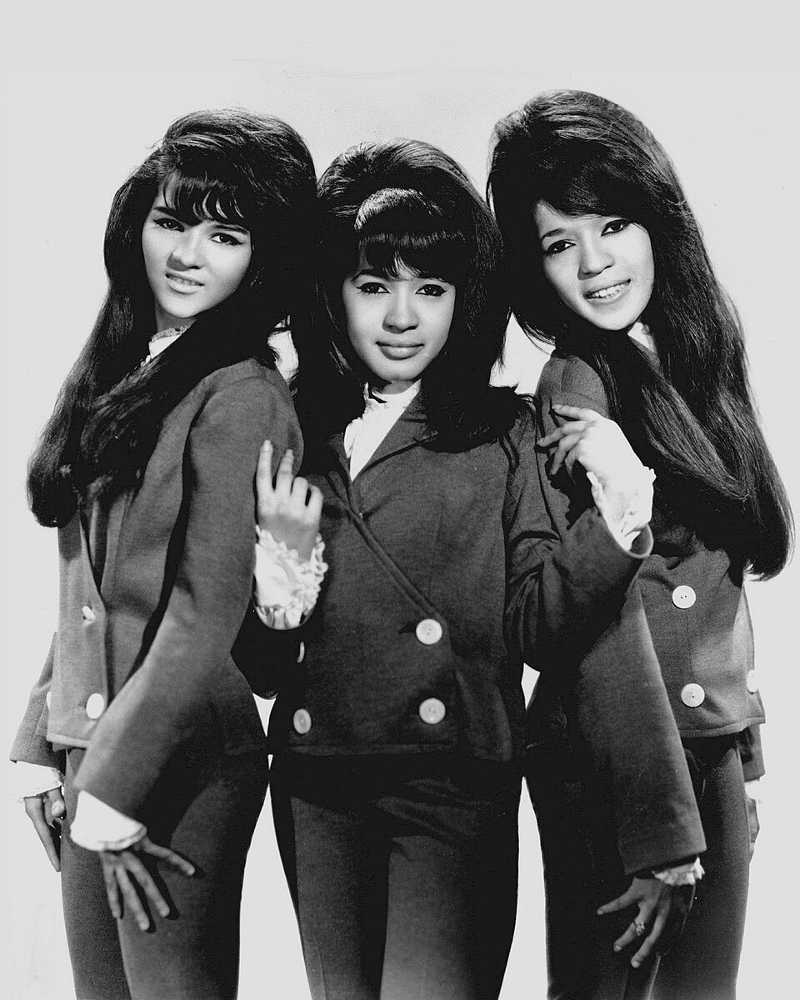

The Ronettes were a New York girl group whose 1963 single "Be My Baby" defined Phil Spector's Wall of Sound.
Ronnie Spector, her sister Estelle Bennett and their cousin Nedra Talley put eight singles on the Hot 100 between 1963 and 1966.

Table of Contents
- From Washington Heights to the Peppermint Lounge
- Signing With Phil Spector
- The Ronettes and the 1964 Hit Run
- Why the Hits Dried Up
- Royalties, Honors and Legacy
- FAQ
From Washington Heights to the Peppermint Lounge
A Family Act Learns Harmony
Veronica Bennett, her older sister Estelle and their cousin Nedra Talley grew up in Washington Heights, Manhattan.
Their mothers were sisters, and Saturday nights meant singing for the family at their grandmother's house.
Ronnie adored Frankie Lymon and the Teenagers, and she drilled the girls in three-part harmony on songs like "Goodnight Sweetheart."
After a shaky amateur night at the Apollo Theater, the act shrank to three girls billed as Ronnie and the Relatives.
A Case of Mistaken Identity
Colpix Records signed the trio in 1961.
Every single they cut for the label missed the chart.
The real break came at the Peppermint Lounge during the twist craze.
The club's manager mistook them for the dancers booked to work behind Joey Dee and the Starliters, and he pushed them onstage.
They stayed on as house dancers at $10 a night each.
Radio host Murray the K then booked them at the Brooklyn Fox, where they built the towering hair and heavy eye makeup that became their look.
Signing With Phil Spector
The Audition
In early 1963 Estelle phoned producer Phil Spector and asked for an audition.
At Mira Sound Studios in New York, the girls sang "Why Do Fools Fall in Love," and Spector leaped out of his seat.
He first wanted Ronnie alone, but her mother insisted on a deal for all three.
By March 1963 they were on his Philles Records, and the group took the name The Ronettes.
Recording Be My Baby
Spector wrote "Be My Baby" with Jeff Barry and Ellie Greenwich.
The trio recorded it in July 1963, and it was in stores by August.
It climbed to No. 2 on the Hot 100, and it stayed their only 1960s top 10 hit.
A young Cher sang backup on the session, which was her first record.
Brian Wilson of The Beach Boys was so taken with the record that "Don't Worry Baby" reads as his tribute to it.
The Ronettes and the 1964 Hit Run
Baby, I Love You and a First UK Tour
The follow-up, "Baby, I Love You," was cut at Gold Star Studios in Los Angeles, with Leon Russell on piano.
Estelle and Nedra were away on Dick Clark's Caravan of Stars tour, so Darlene Love, Cher and Sonny Bono sang backup beside Ronnie.
It reached No. 24 on the Hot 100 and No. 11 in the UK.
In January 1964 the group flew to Britain for a first tour.
The Rolling Stones opened their shows.
On their first night they met The Beatles, and Ronnie and John Lennon became friends.
Lennon asked them to fly back to America with the Beatles on February 7, 1964, but Spector said no.
Walking in the Rain
Three more top 40 singles followed that year.
"Walking in the Rain" was the biggest, reaching No. 23 on the Hot 100.
Ronnie remembered the writers still tweaking the lyrics as she stepped up to sing.
Its rumbling thunder and lightning effects earned engineer Larry Levine a Grammy nomination.
Later in 1964 came the only studio album, Presenting the Fabulous Ronettes Featuring Veronica, which peaked at No. 96.
Tap Play to hear a single, or a heading to sort.
| Play | |||
|---|---|---|---|
| "Be My Baby" | 1963 | No. 2 | |
| "Baby, I Love You" | 1963 | No. 24 | |
| "(The Best Part of) Breakin' Up" | 1964 | No. 39 | |
| "Do I Love You?" | 1964 | No. 34 | |
| "Walking in the Rain" | 1964 | No. 23 | |
| "Born to Be Together" | 1965 | No. 52 | |
| "Is This What I Get for Loving You?" | 1965 | No. 75 | |
| "I Can Hear Music" | 1966 | No. 100 |
Peaks are from Billboard's chart history.
Why the Hits Dried Up
Songs Spector Held Back
After 1964, Spector released far less of what the group recorded.
He shelved "Chapel of Love," and the Dixie Cups took their own version to No. 1.
"Born to Be Together" stalled at No. 52 in 1965, and "Is This What I Get for Loving You?" reached only No. 75.
Many observers blame his reluctance to promote the group, which let the Supremes pass them.
The Beatles Tour and the Breakup
In August 1966 the trio joined the bill for a 14-city US tour with the Beatles.
No other girl group toured with the band.
Spector kept Ronnie in California, so cousin Elaine, a former member, took her place on the road.
Their last chart single, "I Can Hear Music," sat at No. 100 for one week that October.
The Beach Boys covered it with far greater success in 1969.
The group split in 1967, and Ronnie married Spector the next year.
Royalties, Honors and Legacy
The Royalty Fight
In 1988 the original trio sued Spector for $10 million in unpaid royalties.
The case reached New York's highest court in 2002.
The court found their plight sympathetic, noting they had earned less than $15,000 in royalties.
It still ruled that their 1963 contract gave Spector unconditional rights to the recordings.
Honors and Farewells
"Be My Baby" entered the Grammy Hall of Fame in 1999.
The Vocal Group Hall of Fame followed in 2004.
On March 12, 2007, the Rock and Roll Hall of Fame inducted them, with Keith Richards giving the speech.
Estelle Bennett died on February 11, 2009, aged 67.
Ronnie Spector died on January 12, 2022, aged 78.
Nedra Talley Ross died on April 26, 2026, aged 80, the last of the three.
Their peak years were 1963 and 1964, and the Beatles tour came in 1966.
FAQ
Who were the members of The Ronettes?
Lead singer Ronnie Spector (born Veronica Bennett), her older sister Estelle Bennett and their cousin Nedra Talley.
What was the biggest hit by The Ronettes?
"Be My Baby" was their biggest hit, reaching No. 2 on the Billboard Hot 100 in 1963.
Did The Ronettes tour with the Beatles?
Yes, they joined the Beatles' 14-city US tour in August 1966.
Ronnie did not go, so their cousin Elaine took her place.
Who wrote Be My Baby?
Phil Spector, Jeff Barry and Ellie Greenwich wrote it, and Spector produced the record.
Are any members of The Ronettes still alive?
No.
Estelle Bennett died in 2009, Ronnie Spector in 2022 and Nedra Talley Ross in April 2026.
Meet their label mates and rivals in our 1960s pop and Brill Building hub.
The full story is in Wikipedia's entry.
Start with "Be My Baby," then play the rest of the singles to hear why The Ronettes still sound so big.